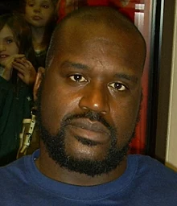

Shaquille Rashaun O'Neal (/ʃəˈkiːl/ shə-KEEL; born March 6, 1972), nicknamed "Shaq" (/ʃæk/ SHAK), is an American retired professional basketball player who is a sports analyst on the television program Inside the NBA on TNT. He is widely considered one of the greatest players in the history of the National Basketball Association (NBA).[1][2][3] At 7 ft 1 in (2.16 m) tall[4] and 325 pounds (147 kg), he was one of the tallest and heaviest players in the history of the NBA. O'Neal played for six teams throughout his 19-year career.
Shaquille Rashaun O'Neal (/ʃəˈkiːl/ shə-KEEL; born March 6, 1972), nicknamed "Shaq" (/ʃæk/ SHAK), is an American retired professional basketball player who is a sports analyst on the television program Inside the NBA on TNT. He is widely considered one of the greatest players in the history of the National Basketball Association (NBA).[1][2][3] At 7 ft 1 in (2.16 m) tall[4] and 325 pounds (147 kg), he was one of the tallest and heaviest players in the history of the NBA. O'Neal played for six teams throughout his 19-year career.
Following his time at Louisiana State University, O'Neal was drafted by the Orlando Magic with the first overall pick in the 1992 NBA draft. He quickly became one of the best centers in the league, winning Rookie of the Year in 1992–93 and leading his team to the 1995 NBA Finals. After four years with the Magic, O'Neal signed as a free agent with the Los Angeles Lakers. They won three consecutive championships in 2000, 2001, and 2002. Amid tension between O'Neal and Kobe Bryant, O'Neal was traded to the Miami Heat in 2004, and his fourth NBA championship followed in 2006. Midway through the 2007–2008 season he was traded to the Phoenix Suns. After a season-and-a-half with the Suns, O'Neal was traded to the Cleveland Cavaliers in the 2009–10 season.[5] O'Neal played for the Boston Celtics in the 2010–11 season before retiring.[6]
O'Neal's individual accolades include the 1999–2000 MVP award, the 1992–93 NBA Rookie of the Year award, 15 All-Star game selections, three All-Star Game MVP awards, three Finals MVP awards, two scoring titles, 14 All-NBA team selections, and three NBA All-Defensive Team selections. He is one of only three players to win NBA MVP, All-Star game MVP and Finals MVP awards in the same year (2000); the other players are Willis Reed in 1970 and Michael Jordan in 1996 and 1998. He ranks 8th all-time in points scored, 6th in field goals, 15th in rebounds, and 8th in blocks. Largely due to his ability to dunk the basketball, O'Neal also ranks third all-time in field goal percentage (58.2%).[7] O'Neal was elected into the Naismith Memorial Basketball Hall of Fame in 2016.[8] He was elected to the FIBA Hall of Fame in 2017.[9]
In addition to his basketball career, O'Neal has released four rap albums, with his first, Shaq Diesel, going platinum. He has appeared in numerous films and has starred in his own reality shows, Shaq's Big Challenge and Shaq Vs.. He hosts The Big Podcast with Shaq.[10] He is also the general manager of Kings Guard Gaming of the NBA 2K League.[11]